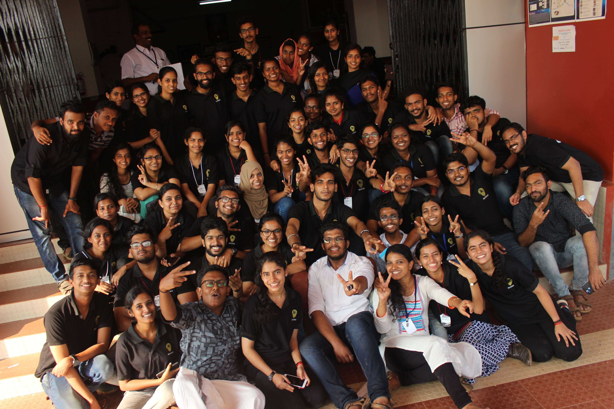

~/ieee $ git log --author="davish" --since=2018
Davish a.k.a. Akarsh — IEEE volunteer, webmaster & speaker
Building and running websites for IEEE sections, councils and Region 10, speaking at student branches on Flutter, AR and research publishing, and helping organise the events that bring engineers together — since 2018.
IEEE SB NSSCE→
Kerala Section→
India Council→
Region 10→
IEEE YP→
Singapore Section

01
Focus areas
what the commits are mostly about
02
Activity
one square per entry · click a year to jump
volunteer roleevent / talk
03
Volunteer log
newest first